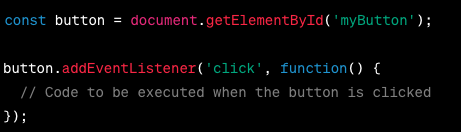

Event listeners in JavaScript are functions that are attached to specific events on HTML Event. event listener respond to clicks, mouse movement, key presses, and more.
the process to use event listener.
use method such getElementById, querySelector or other DOM traversal techniques to select HTML elements.
use addEventListener method to attache an event listener to selected element.

event handler or callback functions are the code which will run after when the event listener is completed or proceeed.